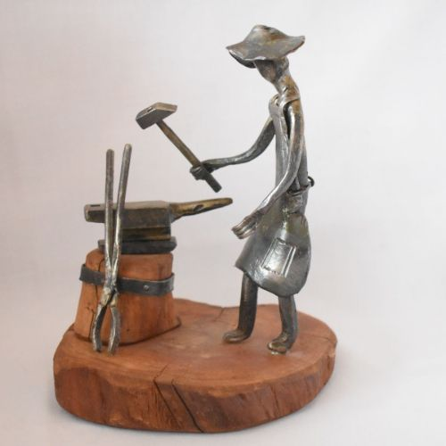

About:
My name is Jan Wasiak and I live in a small town of Kutno, Poland. I have retired about 6 years ago, and this is when my passion for work with iron and blacksmithing has commenced. Art has always been of an interest to me and as far as I remember I have been handcrafting around my house. This ranged from everyday projects to repair something around my household to wood carving. I have also tried my skills in mirror and painting frames gold gilding. I feel however that my true passion for art has emerged when I tried blacksmithing and work with iron and metal. It has taken me couple of years to become comfortable and to truly find my place in blacksmithing world. What has started as a potential hobby is now my passion and way of spending my spare time. Thank you for taking the time to visit my website and I hope you will enjoy it.
Workshop:
My workshop is a place where I create my pieces but also where think about my future projects. I have created this workspace in my garden, using recycled pieces of wooden plans. Whilst the place is really small, overtime I have equipped it with blacksmith anvil and more importantly wood fired blacksmith’s traditional forge. Overtime I have accumulated all required tools and material, which I always tend to keep around my workshop. At times, the spare pieces of iron or metal lying around my workshop bring some ideas. My favorite technique is hammering hot iron on the anvil horn.

Vision:
What once I thought was my hobby turned into passion and perhaps a way of living and spending my spare time. Throughout the last few years, I have handcrafted figures, everyday objects, religious statues and objects, small furniture such as coffee table or mirror frame. At times a vision to develop a new piece comes from everyday life observations. My ultimate vision is to transform iron into art that so it can be enjoyed by my clients, friends and family. All of my products are handcrafted using traditional blacksmithing techniques.